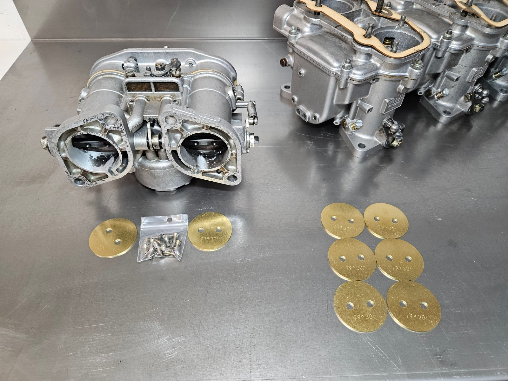

Een eerbetoon aan de motorsport
Als liefhebbers van klassieke auto's weten we dat er niets gaat boven het gevoel van nostalgie en opwinding dat een oldtimer met zich meebrengt, zeker als het gaat om motorsportlegendes zoals de Maserati Ghibli uit 1967. Deze auto belichaamt een tijdperk van puur rijplezier en technische meesterwerken.
De foto's hieronder laten zien hoe we stap voor stap te werk gingen, elk detail koesterend en elk onderdeel met de grootste zorg behandelend. Want voor ons is het niet alleen een kwestie van restauratie; het is een eerbetoon aan de rijke erfenis van de motorsport en de tijdloze schoonheid van klassieke auto's.
Zorgvuldige demontage en inspectie
Onze recente taak bracht ons in de wereld van de Weber-carburateurs, specifiek de Weber 40 DCNL, afkomstig van deze iconische Maserati Ghibli uit 1967. Het begon allemaal met een zorgvuldige demontage van de carburateurs. Elk onderdeel, van de sproeierbuizen tot de gasklepassen, werd zorgvuldig geïnspecteerd en gereinigd om ervoor te zorgen dat elk element van deze complexe machines in optimale staat verkeerde.
Wanneer octaan of ethanol uit benzine opdroogt, kan het een residu achterlaten dat schadelijk is voor de motor en het brandstofsysteem. Dit residu kan zich ophopen in diverse onderdelen, zoals binnen in de carburateur, tussen kleppen, choke-onderdelen, sproeierbuizen, acceleratiepompen en membranen, waardoor deze minder efficiënt werken en uiteindelijk kunnen falen.
Het is daarom belangrijk om regelmatig onderhoud aan uw voertuig uit te voeren en brandstof van goede kwaliteit te gebruiken, om ophoping van residu te voorkomen. De foto's hieronder illustreren perfect wat de tekst hierboven uitlegt: deze Maserati Ghibli heeft verre van goed gepresteerd.
Meten met precisie
Een grondige inspectie werd uitgevoerd, waarbij elk onderdeel nauwlettend werd bekeken. Sproeiers en sproeierbuizen werden met precisie-instrumenten gemeten om te garanderen dat ze nog steeds voldeden aan de exacte specificaties die nodig zijn voor topprestaties.
Een belangrijk aspect dat opvalt bij het bekijken van de foto's is de staat van de lagers. Ze lijken extreem uitgedroogd, doordat de leertjes die normaal gesproken over de lagers zitten volledig vergaan zijn. Hierdoor behouden de lagers hun vet niet, wat kan leiden tot verminderde prestaties en zelfs beschadiging van de carburateur. Gelukkig worden tegenwoordig dichte lagers gemaakt, waardoor dit probleem niet meer voorkomt en de levensduur van de carburateur wordt verlengd.
Werken met de originele blauwdruk
Omdat carburateurs complexe mechanische apparaten zijn, maken we altijd gebruik van een blauwdruk. We werken met de originele Italiaanse exploded view van de Weber 40 DCNL. Deze blauwdruk helpt ons om ons te oriënteren in de veelheid aan onderdelen, zodat we elke carburateur met precisie en vakmanschap kunnen reviseren.
Deze carburateurs, vol met geschiedenis en technisch vernuft, vereisen een deskundige hand en een scherp oog om ervoor te zorgen dat ze weer tot leven worden gewekt en kunnen schitteren zoals ze dat ooit op het circuit deden. Met elk gerestaureerd exemplaar eren we niet alleen de geschiedenis van de motorsport, maar dragen we ook bij aan het behoud van deze iconische stukken techniek voor toekomstige generaties autoliefhebbers.